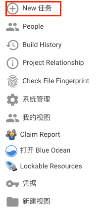
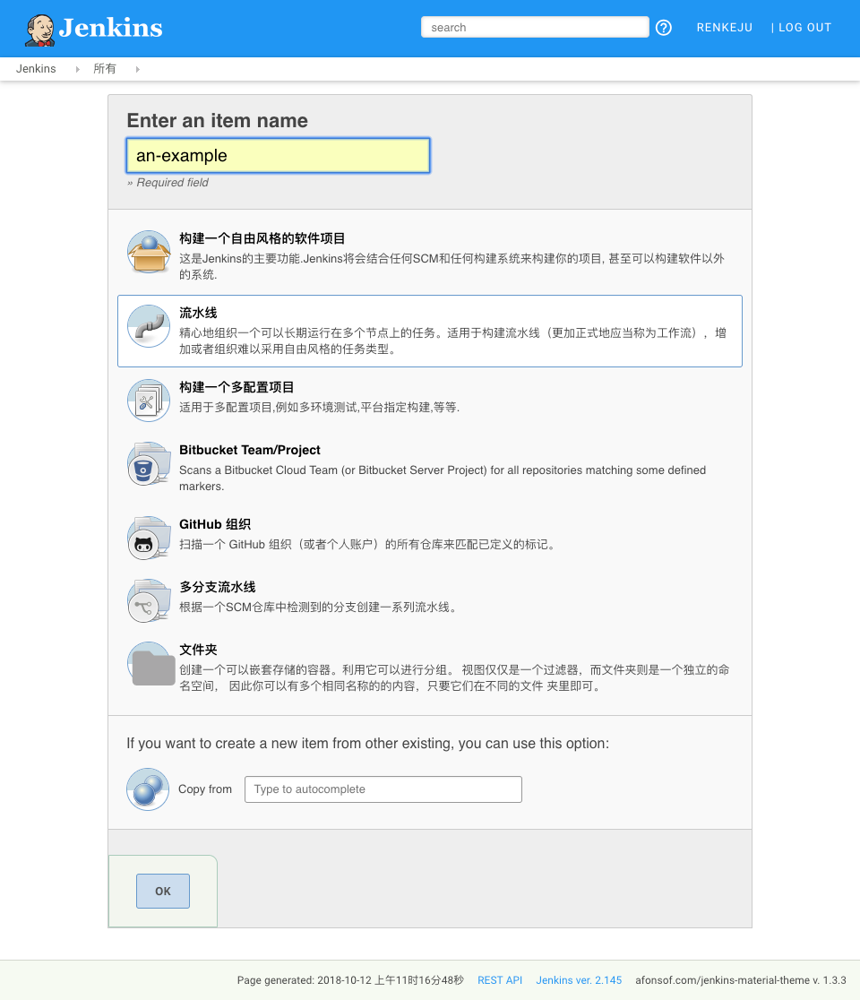
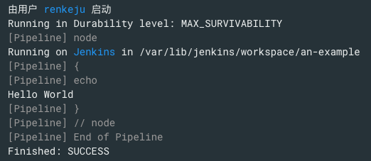
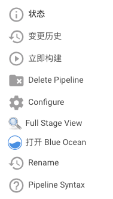

pipeline¶
介绍¶
本章将介绍Jenkins Pipeline的所有方面，从运行Pipeline到写入Pipeline代码，甚至扩展Pipeline本身。
什么是 Pipeline¶
Jenkins Pipeline是一套插件，支持将连续输送Pipeline实施和整合到Jenkins。Pipeline提供了一组可扩展的工具，用于通过PipelineDSL为代码创建简单到复杂的传送Pipeline。
通常，此“Pipeline代码”将被写入 Jenkinsfile项目的源代码控制存储库，例如：
Jenkinsfile (Declarative Pipeline)
pipeline {
agent any
stages {
stage('Build') {
steps {
sh 'make'
}
}
stage('Test') {
steps {
sh 'make check'
junit 'reports/**/*.xml'
}
}
stage('Deploy') {
steps {
sh 'make publish'
}
}
}
}
- agent 表示 Jenkins 应该为 Pipeline 的着一部分分配一个执行者和工作区
- stage 描述这条 Pipeline 的第一个阶段
- steps 描述了要在其中运行的步骤 stage
- sh 执行给定的 shell 命令
- junit 是由 JUnit 插件提供的，用于聚合测试报告的 Pipeline 步骤
为什么是 Pipeline¶
Jenkins 从根本上讲是一种支持多种自动化模式的自动化引擎。Pipeline 在 Jenkins 上添加了一套强大的自动化工具，支持从简单的连续集成到全面的连续输送 Pipeline 的用例。通过建模一系列相关任务，用户可以利用 Pipeline 的许多功能：
- 代码：Pipeline 以代码的形式体现，通常被检入源代码控制，是团队能够编辑，审查和迭代器传送流程。
- 耐用：Pipeline 可以计划和计划外重新启动 Jenkins 管理时同时存在。
- Pausable：Pipeline 可以选择停止并等待人工输入或批准，然后在继续 Pipeline 运行。
- 多功能：Pipeline 支持复杂的现实世界连续交付要求，包括并行分叉/连接，勋和和执行工作的能力。
- 可扩展：Pipeline 插件支持其 DSL 的自定义扩展以及与其他插件集成的多个选项。
虽然 Jenkins 一直允许基于形式的自由式工作联合起来的执行顺序任务，Pipeline 使这个概念成为 Jenkins 的最好的一个部分。 基于 Jenkins 的核心可扩展性，Pipeline 也可以由 Pipeline 共享库用户和插件开发人员扩展。 下面的流程图是在 Jenkins Pipeline 中容易建模的一个连续发货方案的示例：
Pipeline 条件¶
step¶
单一任务，从基础中告诉了 Jenkins 应该怎么做。例如，要执行 shell 命令，请 make 使用一下 sh 步骤： sh 'make' 。当插件扩展 Pipeline DSL 时，通常意味着插件已经实现了一个新的步骤。
Node¶
Pipeline 执行中的大部分工作都是一个或多个声明 node 步骤的上下文中完成的。将工作限制在 Node 步骤中有两件事情：
- 通过将项目添加到 Jenkins 队列来带调度要运行的块中包含的步骤。一旦执行器在节点上空闲，步骤就会运行。2. 创建工作区（特定与该特定 Pipeline 的目录），可以从源代码控制中检出文件完成工作。
Note
根据您的 Jenkins 配置，某些工作空间在一段时间不活动后可能无法自动清除。
Stage¶
stage 是定义整个 Pipeline 的概念上不同子集的一个步骤，例如：“Build”，“Test”和“Deploy”，许多插件用于可视化或呈现Jenkins Pipeline 状态/进度。
入门¶
Jenkins Pipeline 是一套插件，支持将连续输送 Pipeline 实施和整合到 Jenkins。Pipeline 提供了一组可扩展的工具，用于通过 Pipeline DSL 为代码创建简单到复杂的传送 Pipeline。
本节介绍 Jenkins Pipeline 的一些关键概念，并帮助介绍在运行的 Jenkins 实例中定于和使用 Pipelines 的基础知识。
Pipeline 定义¶
脚本 Pipeline 是用 Groovy 写的。Groovy 语法的相关位将在本文档中根据需要进行介绍，因此，当了解 Groovy 时，不需要使用 Pipeline。 可以通过以下任一方式创建基本 Pipeline：
- 直接在 Jenkins 网页界面中输入脚本
- 通过创建一个 Jenkinsfile 可以检入项目的源代码管理库
用任一方法定义 Pipeline 的语法是一样的，但是 Jenkins 支持直接进入 Web UI 的 Pipeline，通常认为最佳实践是在 Jenkinsfile Jenkins 中直接从源代码控制中加载 Pipeline。
在 Web UI 中定义 Pipeline¶
要在 Jenkins Web UI 中创建基本 Pipeline，请按照下列步骤操作：
单击 Jenkins 主页上的 New Item
输入 Pipeline 的名称，选择 Pipeline，然后单击确定。
Attention
Jenkins 使用流水先的名称在磁盘上创建目录。包含空格的管道名称可能会发现不希望路径包含空格的脚本中的错误。
在脚本文本区域中，输入 Pipeline，然后单击保存。

单击立即构建可以运行 Pipeline

单击“构建历史记录”下的 #1，然后单击控制台输出可以查看 Pipeline 的完整输出。
上面的示例显示了在 Jenkins Web UI 中创建的基本 Pipeline 的成功运行，使用两个步骤：
Jenkinsfile (Scripted Pipeline) node { echo 'Hello World' }- node 在jinkins 环境中分配一个执行器和工作空间
- echo 在控制台输出中写入简单的字符串
在 SCM 中定义管道¶
复杂的 Pipeline 难以在 Pipeline 配置页面的文本区域内进行写入和维护。为了使这更容易，Pipeline 也可以在文本编辑器中，并检查源控件，作为 Jenkinsfile，Jenkins 可以通过 Pipeline 脚本从 SCM 选项加载的控件。 为此，在定义 Pipeline 时，从 SCM 中选择 Pipeline 脚本。 选择 SCM 选项中的 Pipeline 脚本后，不要在 Jenkins UI 中输入任何 Groovy 代码；您只需要制定要从其中检索 Pipeline 的源代码的路径。更新制定的存储库中，只要 Pipeline 配置了 SCM 轮询触发器，就会触发一个新构建。
Note
文本编辑器，IDE，GitHub 等将使用 Groovy 代码进行语法高亮显示，第一行 Jenkinsfile 应该是
#!/usr/bin/env groovy Jenkinsfile
内置文档¶
Pipeline 配有内置的文档功能，可以更轻松地创建不同复杂性的 Pipeline。根据 Jenkins 实例中安装的插件自动生成和更新内置文档。 内置文档可以在全局范围找到： http://localhost:8080/pipeline-syntax/ 假设你有一个 Jenkins 实例在本地端口 8080 上运行。同样的文档也作为管道语法链接到任何配置的 Pipeline 的侧栏项目中。
代码段生成器¶
内置的 “Snippet Generator” 实用程序有助于为单个步骤创建一些代码，发现插件提供的新步骤，或为特定步骤尝试不同的参数。
Snippet Generator 动态填充 Jenkins 实例可用的步骤列表。可用的步骤数量取决于安装的插件，它明确地暴露了在 Pipeline 中使用的步骤。
要使用代码段生成器生成步骤代码片段：
在配置的流水线或 http://localhost:8080/pipeline-syntax 导航到 Pipeline 语法链接。
在“样品步骤”下拉惨菜单中选择需要的步骤
使用 “样品步骤”下拉列表下方的动态填充区域配置所选步骤。
单击生成 Pipeline 脚本以创建一个可以复制并黏贴到 Pipeline 中 Pipeline 代码段。

要访问有关所选步骤的其他信息和/或文档，请单机帮助图标（由上图中的红色箭头指示）
全局变量引用¶
处理代码片段生成器之外，Pipelin 还提供了一个内置的”全局变量引用“。像 Snippet Generator 一样，它也是由插件动态填充的，与代码段生成器不同的是，全局变量引用仅包含 Pipeline 提供的变量的文档，这些变量可用于 Pipeline。
在 Pipeline 中默认提供的变量是：
ENV
脚本化 Pipeline 可访问的环境变量，例如：
env.PATH或env.BUILD_ID。请参阅内置的全局变量参考，以获取管道中可用的完成和最新的环境变量列表。PARAMS
将为 Pipeline 定义的所有参数公开为只读地图，例如：
params.MY_PARAM_NAMEcurrentBuild
可用于发现有关当前正在执行的 Pipeline 信息，于如属性
cureenBuild.result，currentBuild.displayName等等请教内置的全局变量引用了一个完整的，而且是最新的的，可用的属性列表currentBuild。
jenkinsfile 使用¶
本节基于 “Jenkins 入门” 中介绍的信息，并介绍更有用的步骤，常见的模式，并演示一些非平凡的 Jenkinsfile 示例。
创建一个 Jenkinsfile 被检入源代码控制，提供了一些直接的好处：
- Pipeline 上的代码审查/迭代
- Pipeline 的审计跟踪
- Pipeline 的唯一真实来源，可以由项目的多个成员查看和编辑。
Pipeline 支持两种语法：Declarative（在 Pipeline 2.5 中引入）和 Scripted Pipeline。两者都支持建立连续输送 Pipeline。两者都可以用于在 Web UI 或者 a 中定义一个流水线 Jenkinsfile，尽管通常被认为是 Jenkinsfile 将文件创建并检查到源代码控制库中的最佳做法。
创建 Jenkinsfile¶
如”入门“部分所述， Jenkinsfile 是一个包含 Jenkins Pipeline 定义的文本文件，并被检入源代码控制，考虑以下 Pipeline，实施基本的三个阶段连续输送 Pipeline。
Jenkinsfile (Declarative Pipeline)
pipeline {
agent any
stages {
stage('Build') {
steps {
echo "Building.."
}
}
stage('Test') {
steps {
echo "Testing.."
}
}
stage("Deploy") {
steps {
echo "Deploying...."
}
}
}
}
Toggle Scripted Pipeline (Advanced)
node {
stage('build') {
echo 'Building....'
}
stage('Test') {
echo 'Testing....'
}
stage('Deploy') {
echo 'Deploying....'
}
}
并非所有的 Pipeline 都将具有相同的三个阶段，但是对于大多数项目来说，这是一个很好的起点。以下部分将演示在 Jenkins 的测试安装中创建和执行简单的 Jenkins。
Note
假设已经有一个项目的源代码管理库，并且已经在 Jenkins 中按照这些说明定义了一个 Jenkins。
使用文本编辑器，理想的是支持 Groovy 语法突出显示文本编辑器，项目的根目录中创建一个新的 Jenkinsfile。
上述声明性 Pipeline 示例包含实现连续传送 Pipeline 的最小必要结构。需要的代理指令指示 Jenkins 为 Pipeline 分配一个执行器和工作区。没有 agent 指令，不仅声明 Pipeline 无效，所以不能做任何工作！默认情况下，该 agent 伪指令确保源存储库已被检出并可用于后续阶段的步骤。
该阶段的指令，和步骤的指令也需要一个有效的声明 Pipeline，因为他们指示 Jenkins 如何执行并在哪个阶段应该执行。
Note
要使用 Scripted Pipeline 进行更高级的使用，上面的示例 node 是为 Pipeline 分配执行程序和工作空间的关键第一步。在本质上，没有 node Pipeline 不能做的工作！从内部 node，业务的第一个顺序是检查此项目的源代码。由于 Jenkinsfile 直接从源代码控制中抽取，所以 Pipeline 提供了一种快速简便的方式来访问源代码的正确版本
Jenkinsfile (Scripted Pipeline)
node {
checkout scm
/* .. snip .. */
}
checkout 步骤将检出从源控制代码；scm 是一个特殊边领，指示 checkout 步骤克隆触发此 Pipeline 运行的特定修订。
建立¶
对于许多项目，Pipeline “工作” 的开始就是“构建”阶段。通常，Pipeline 在这个阶段将是源代码组装，编译或打包的过程。Jenkinsfile 中有不是现有的构建工具，如 GNU/make，Maven，Gradle 等的替代品，而是可以被看作是一个胶层结合项目的开发生命周期的多个阶段（构建，测试，部署等）一起。
Jenkinsfile (Declarative Pipeline)
pipeline {
agent any
stages {
stage('Build') {
steps {
sh 'make'
archiveArtifacts artifacts: '**/target/*.jar', fingerprint: true
}
}
}
}
- 该 sh 步骤调用 make 命令，只有在命令返回退出代码零时才会继续下一步。pipeline中任何不为零的退出代码都属于失败。
- archiveArtifacts 捕获与 include pattern(
**/target/*.jar) 匹配文件，并将他们保存到 Jenkins 主文件以供后面检索。
Attention
存档工件不能替代使用诸如 artifactory 或 Nexus 之类的外部工件存储库，只能用于基本报告和文件归档。
测试¶
运行自动化测试是任何成功的连续传送过程的重要组成部分。因此，Jenkins 有许多插件提供的测试记录，报告和可视化设备。在基本层面上，当有测试失败时，让 Jenkins 在 Web UI 中记录报告和可视化的故障是有用的。下面的示例使用 junit 由 JUnit 插件提供的步骤。
在下面的示例中，如果测试失败，则Pipeline 被标记为“不稳定”，如 Web UI 中的黄色球。根据记录的测试报告，Jenkins 还可以提供历史趋势分析和可视化。
Jenkinsfile (Declarative Pipeline)
pipeline {
agent any
stages {
steps {
/* `make check` returns non-zero on test failures,
* using `true` to allow the Pipeline to continue nonetheless
*/
sh 'make check || true'
junit '**/target/*.xml'
}
}
}
Toggle Scripted Pipeline (Advanced)
Jenkinsfile (Scripted Pipeline)
node {
/* .. snip .. */
stage('Test') {
/* `make check` returns non-zero on test failures,
* using `true` to allow the Pipeline to continue nonetheless
*/
sh 'make check || true'
junit '**/target/*.xml'
}
/* .. snip .. */
}
- 使用内联 shell conditional(sh ‘make check || true’) 确保该 sh 步骤始终看到退出代码零，从而使该 junit 步骤有机会捕获和处理测试报告。下面的“故障处理”部分将详细介绍其他方法。
- junit 捕获并关联与包含 pattern(
**/target/*.xml) 匹配的 JUnit XML 文件
部署¶
部署可能意味着各种步骤，具体取决于项目或组织的要求，并且可能是从构建的工件发送到 Artifactory 服务器，将代码推送到生产系统的任何步骤。
在 Pipeline 示例的这个阶段，“构建”和“测试”阶段都已成功执行。实际上，“部署”阶段只能在上一阶段完成，否则 Pipeline 将提前退出。
Jenkinsfile (Declarative Pipeline)
pipeline {
agent any
stages {
stage('Deploy') {
when {
expression {
currentBuild.result == null || currentBuild.result == 'SUCCESS'
}
}
steps {
sh 'make publish'
}
}
}
}
Toggle Scripted Pipeline (Advanced)
Jenkinsfile (Scripted Pipeline)
node {
/* .. snip .. */
stage('Deploy') {
if (currentBuild.result == null || currentBuild.result == 'SUCCESS') {
sh 'make publish'
}
}
/* .. snip .. */
}
- 访问该
currentBuild.result变量允许 Pipeline 确定是否有任何测试失败。在这种情况下，值将是UNSTABLE。
假设一切都在 Jenkins Pipeline 示例中成功执行，每个成功的 Pipeline 运行都将会存档关联构建工件，报告的测试结果和完整的控制台输出全部放在 Jenkins 中。
Note
脚本 Pipeline 可以包括条件测试（如上所示），循环，try/catch/finally 块甚至函数。下一节将详细介绍这种高级脚本 Pipeline 语法。
管道高级语法¶
字符串插值¶
Jenkins Pipeline 使用于 Groovy 相同的规则进行字符串插值。Groovy 的字符串插值支持可能会让很多新来的语言搞到困惑。虽然 Groovy 支持使用单引号或双引号声明一个字符串，例如：
def singlyQuoted = 'Hello'
def doublyQuoted = "World"
只有后一个字符串将支持基于 dollar-sign($) 的字符串插值，例如：
def username = 'Jenkins'
echo 'Hello Mr. ${username}'
echo "I said, Hello Mr. ${username}"
会导致
Hello Mr. ${username}
I said, Hello Mr. Jenkins
了解如何使用字符串插值对于使用一些管道更高级的功能至关重要。
工作环境¶
Jenkins Pipeline 通过全局变量公开环境变量，该变量 env 可以从任何地方获得 Jenkinsfile。假设 Jenkins 主机正在运行，在 http://localhost:8080/pipeline-syntax/globals#env 中记录了可从 Jenkins Pipeline 中访问的环境变量的完整列表 localhots:8080，其中包括：
BUILD_ID
当前版本ID，与 Jenkins 版本 1.597+ 中创建的构建相同，为 BUILD_NUMBER
JOB_NAME
此构建项目的名称，如 “foo” 或 “foo/bar”
JENKINS_URL
完整的 Jenkins 网址，例如 example.com:port/jenkins/ (注意：只有在“系统配置”中设置了 Jenkins 网址时才可用)
参考或使用这些环境变量可以像访问 Groovy Map 的任何键一样，例如：
Jenkinsfile (Declarative Pipeline)
pipeline {
agent any
stages {
stage('Example') {
steps {
echo "Running ${env.BUILD_ID} on ${env.JENKINS_URL}"
}
}
}
}
Toggle Scripted Pipeline (Advanced)
Jenkinsfile (Scripted Pipeline)
node {
echo "Running ${env.BUILD_ID} on ${env.JENKINS_URL}"
}
设置环境变量¶
根据是否使用 Declarative 或 Scripted Pipeline，在 Jenkins Pipeline 中设置环境变量是不同的。 声明式 Pipeline 支持环境指令，而 Scripted pipeline 的用户必须使用该 withEnv 步骤。
Jenkinsfile (Declarative Pipeline)
pipeline {
agent any
environment {
CC = 'clang'
}
stages {
stage('Example') {
environment {
DEBUG_FLAGS = '-g'
}
steps {
sh 'printenv'
}
}
}
}
Toggle Scripted Pipeline (Advanced)
Jenkinsfile (Scripted Pipeline)
node {
/* .. snip .. */
withEnv(["PATH+MAVEN=${tool 'M3'}/bin"]) {
sh 'mvn -B verify'
}
}
- environment 顶级 pipeline 块中使用的指令将适用于 Pipeline 中的所有步骤。
- 在一个 environment 意图中定义的一个指令 stage 仅将给定的环境变量应用与该过程中的步骤 stage